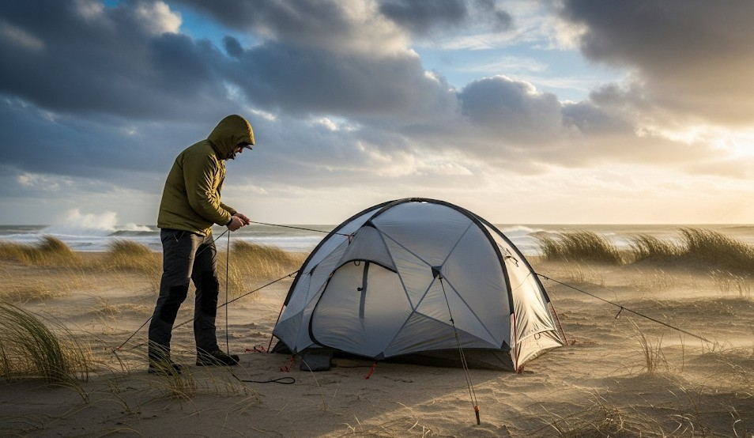

Storm-Grade Shelter in High Winds (Coastal/Plains)
Objective
Keep shelter standing in 60–90 km/h gusts by reducing profile, over‑anchoring, and managing guyline geometry.
Site Selection
- Leeward side of terrain; avoid bowls that funnel wind.
- Check for widowmakers (dead limbs) and tide/surge risk.
Orientation
Point the smallest surface into the wind; lower windward edge to ground; overlap flaps like shingles.
Anchors & Lines
- Double stakes at corners (V‑angle) or deadman anchors buried 20–30 cm.
- Use shock cord sections to absorb gusts.
- Triangulate guylines to avoid single‑point failure.
Interior Management
- Keep load low and centered; pack heavy bags around windward base.
Real Example
A tarp pyramid with buried deadmen and shock‑inlines rode out a coastal squall; neighbors with tall A‑frames collapsed at 02:00.
Checklist
- Extra stakes + cord
- Shock cord loops
- Sand/snow bags for deadmen
Contingencies
- Wind shifts 90° → rotate orientation at first lull; keep spare anchors staged.
- Peg pull‑outs → retie to load‑bearing seams with a clove hitch + backup.
After‑Action
Mark prevailing wind patterns for your site and pre‑tie shock sections.
← Previous | All Articles | Next →